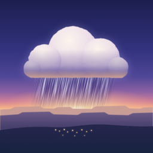

Dawn
Australian weather, explained for your day. On iPhone and Apple Watch, with forecasts from Apple Weather.
Get Dawn on the App Store: free, in Australia.
Need help? Email csergay@gmail.com. Please say which screen you were on, roughly when it happened, and which device you're using. Please don't include your home address.
For a problem with the app itself, you can attach the diagnostic report: in Dawn, open Settings › Privacy and support › Diagnostic report and share it. It never contains your location, places or searches.
Getting started
- Choose Use my location, or search for an Australian suburb to add a place. You can save up to five places, and none of them needs background location.
- Swipe between Now, Day and Week. Hold the timeline on Now to see any hour of the next day play out.
- Add your plans under Your day on Now, or in Settings › Your plans (a morning run, the school pickup, washing on the line), and Dawn says whether each looks good, OK or poor, and when a better time is close.
Questions
- Why don't I see the next hour minute by minute?
- Apple Weather only offers minute-by-minute rain for some areas. Where it doesn't, Dawn shows the hourly chance of rain instead and says so.
- Where do the forecasts come from?
- Every forecast comes from Apple Weather, requested by your iPhone or Apple Watch. Forecasts can be wrong and showers can be missed.
- Does Dawn send weather warnings?
- Dawn shows severe-weather warnings for the place you're viewing when its forecast updates, but it doesn't monitor for new warnings or alert you to them. For severe weather and emergencies, follow official warnings from the Bureau of Meteorology and your state's emergency services.
- Widgets
- Touch and hold your Home Screen, tap Edit › Add Widget and choose Dawn. For the Lock Screen, touch and hold it, tap Customise and add a Dawn widget. Then touch and hold the widget, choose Edit Widget, and pick one of your saved places; widgets show saved places, not your current location. Open a place's Day forecast in Dawn once before using its widget. iOS decides how often widgets refresh, and opening Dawn updates them straight away. Tapping a widget opens Day for that place.
- The rain Live Activity
- When Dawn is open and Apple's next hour says rain will start soon, the countdown follows you to the Lock Screen and Dynamic Island. It ends when the rain is over. Dawn can't update it in the background, so once its forecast is ten minutes old it says it's out of date until you open Dawn again.
- Siri and Shortcuts
- Ask Siri “Will it rain soon in Dawn” or “How's my day in Dawn”, or find Dawn's actions in the Shortcuts app.
- Apple Watch
- The watch app shows the next walk and your plans, with complications for temperature, rain, daylight and your next plan. It fetches its own forecasts and works without your iPhone nearby. Your iPhone shares the place on screen, your plans, walking preferences and theme with it.
- The morning message and the calendar check
- Both are optional and off until you turn them on in Settings › Your plans. The morning message is one notification a day with the day's verdicts. The calendar check reads today's and tomorrow's events on your iPhone to judge the outdoor ones; event details are never stored or sent.
- Removing your data
- In Dawn, choose Settings › Remove my places and data. It erases your places, current area, plans, pending morning messages and stored forecasts on this iPhone, even offline. Your Apple Watch forgets them the next time it hears from your iPhone. Deleting the app removes everything else Dawn stored.
More apps by Colin Sergay
- Japa: a mala, rosary and tasbih counter for iPhone, iPad and Apple Watch, with the words of your mantra or prayer in view.
- Lamp & Line: the complete Berean Standard Bible, free and offline, with a Psalm, a reading and a prayer each day on iPhone, iPad and Apple Watch.
- Vialog: a private injection tracker for iPhone, with your schedule, records, site log, reminders and notes.
- Arrival Sky: the stars, the Moon and the planets as they are right now from where you stand, and the sky you were born under.
- Sipworthy: a private coffee journal for iPhone and iPad, to rate café coffees, dial in your beans at home and find the cups worth drinking again.
- TrueRate: take-home pay after tax, GST and super for Australian contractors on iPhone, and whether a contract is worth taking.
- Tally: sales, downloads, analytics and reviews for all your App Store apps at a glance, on iPhone, iPad and Mac.
- Dusk: dark mode for every website in Safari on iPhone, iPad and Mac, in colors that look designed, not inverted.
- ElfClean: a Mac cleaner for people who build with AI, finding the space AI tools, models, old node_modules and Xcode left behind.